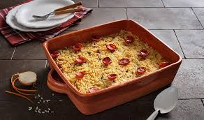

arroz de pato á antiga
Um arroz de pato é sempre uma boa ideia para uma festa ou jantar de amigos. Saiba como fazer a receita de arroz pato à antiga, e prepare uma refeição no forno, ideal para partilhar.
Ingredientes
- 1/2 Pato cortado em pedaços
- 1 Cebola Grande
- 1 Folha de Louro
- 2 Dentes de Alho
- 1 Cenoura
- 1 Chouriço de Carne
- 200 g Presunto
- 1/2cálice Vinho do Porto
- Pimenta q.b.
- Para o Arroz:
- 2 chávenas Arroz Vaporizado
- 1 Cebola
- 4 Chávenas Caldo do Pato
- Gordura do Pato q.b.
- Sal q.b.
-
modo de preparação
- 1. Numa panela coloque meio pato em pedaços e acrescente chouriço e presunto.
- 2. Junte também cenoura, cebola, alho e louro, e por fim meio cálice de Vinho do Porto.
- 3. Regue com água, tempere com pimenta e leve ao lume durante 45 minutos.
- 4. Quando estiver bem cozinhado, retire o pato do lume e desfie. Reserve também o chouriço, o presunto, parte do caldo e a gordura que sobrou da cozedura.
- 5. Para o arroz, comece por picar uma cebola, e leve a refogar na gordura do pato.
- Entretanto, lave arroz vaporizado em água fria e junte ao tacho para que frite ligeiramente.
- Regue com o caldo da cozedura do pato, tempere com sal, e deixe cozinhar durante 10 minutos.
- 8. Enquanto isso, corte o chouriço em rodelas e o presunto em pequenos pedaços. Por fim, disponha tudo numa assadeira.
- 9. Faça uma cama de arroz, coloque por cima o pato e o presunto, volte a tapar com arroz e termine com o chouriço, antes mesmo de levar ao forno durante 10 minutos.
- 10. Sirva este arroz de pato bem tostadinho, na companhia de toda a família.
